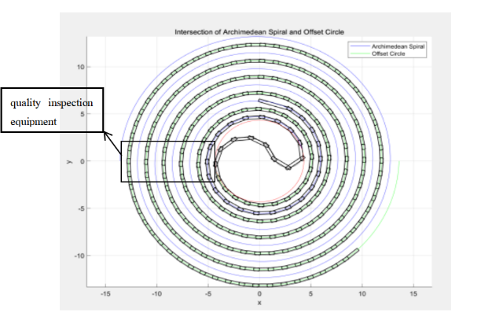
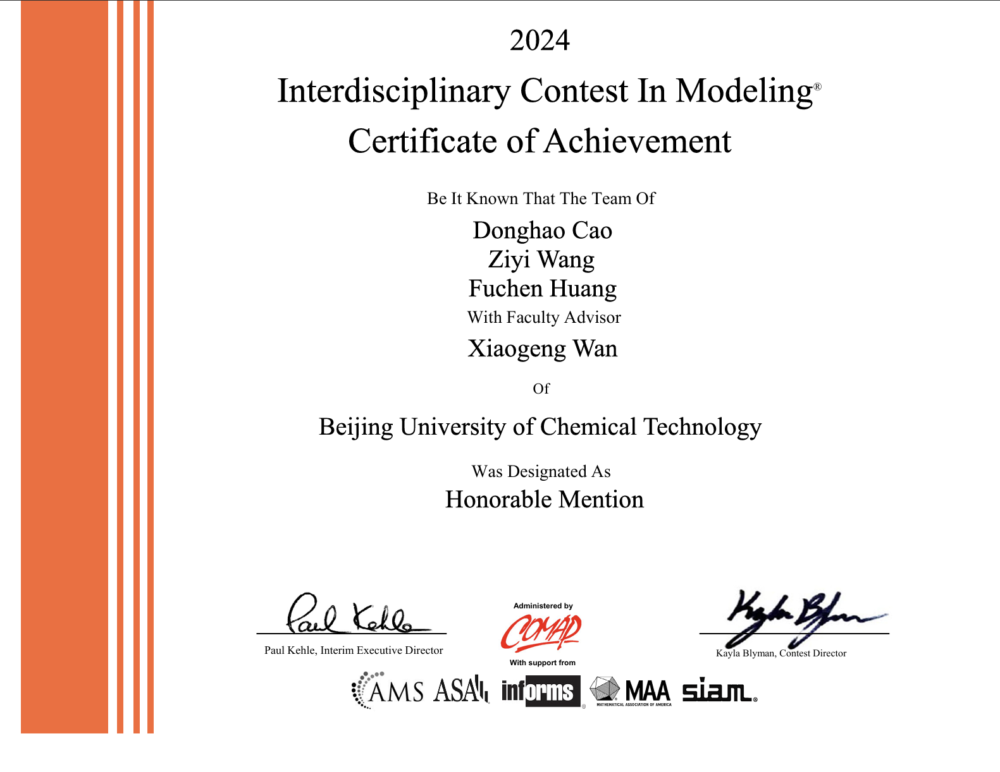
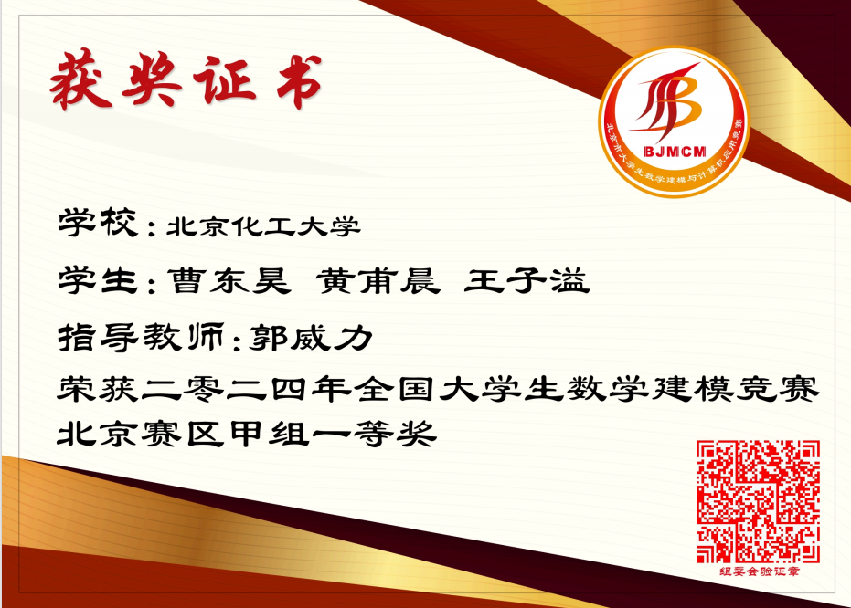

|
Donghao Cao I'm a student majored in Mechanical Engineering at BUCT (Beijing University of Chemical Technology) in Beijing,China, where I lead a small team that mostly works on NeRF. In learning courses, I got 90.43 of 100 averaging-score and GPA of 3.83 which is top 5% (4/83) ranks in whole major. Apart from that, I took part in many projects, which bring me a lot of prizes in competitions. |
{kind=link}
ScholarshipNational Scholarship, from Ministry of Education of the People's Republic of China New Oriental Vision Overseas Scholarship, from Beijing Xindongfang Vision Overseas Consulting Co.,Ltd. BUCT First Prize Scholarship, from Beijing University of Chemical Technology (BUCT) Quality Development Scholarship (For outstanding performance in contests), from Beijing University of Chemical Technology (BUCT) |
PublicationI'm interested in computer vision, contorl engineering, robotics, and mathematics modelling. |
|

|
The Position Visualization Modeling of Mechanical
Product Assembly Line Based on Equidistant Helix
Donghao Cao,Fuchen Huang,Ziyi Wang,Kui Duammu AIVRV, 2024 This study presents a uniformly spaced recursive model to determine the position and velocity magnitude of mechanical products at various locations and time intervals. By assuming a constant speed for the assembly line, the position of the initial product at different time intervals is calculated using arc length. Building upon this, a node position model based on the Cosine Rule is applied to recursively determine the front handle center of each subsequent product relative to the rear handle center of the preceding product. |
Main Academic AwardsI've got amounts of prizes in the field of machinacial, robotics, maths modeling and coding. |
|  |
Evaluate and estimate site-specific disaster losses and residential location recommendations
Donghao Cao, Fuchen Huang, Ziyi Wang, Honorable Mention in ICM (The Interdisciplinary Contest in Modeling), 2024 With the increasing frequency of natural disasters, the losses caused by natural disasters and insurance industry continue to increase, the real estate industry is faced with the problem of construction location, and some important buildings are also damaged by natural disasters. We establishes Insurance Provision Model (IPM), Protection Index (PI), Architecture Construction Value (ACV) and other models, and solves them based on prediction model, break-even analysis, combined weight analysis, TOPSIS, ArcGIS location analysis and other methods. |
|  |
Research on the Path Problem of Bench Dragon Based on Recursion and Visualization Models
Donghao Cao, Fuchen Huang, Ziyi Wang 1st Prize of Beijing Municipality in CUMCM (China Undergraduate Mathematical Contest in Modeling), 2024 The Bench Dragon is an important folk activity in China's coastal regions, where the procession moves along equidistant spirals. Issues such as collisions between different parts and disorderly formations may arise if the pitch of the spiral is too large or too small, or if the speed is inappropriate. By using mathematical modeling to optimize the position and speed parameters of the dragon procession, the overall coordination of the team can be improved and collisions can be avoided. |
|
|
Lanqiao Cup (popular coding race in China) Channal of Python, Group of National Key Universities
2nd Prize of Provincial |
Other AwardsHere's a lot of small awards and I like some other subjects such as physics and English competitions. ·China Engineering Practice and Innovation Ability Competition - Beijing Municipal 2nd place ·BUCT Sprout Cup - Physical Production Channel - University 1st place ·RAICOM Four-legged Collaborative Undergraduate Group - Beijing Provincial 3rd Prize ·Physics Experiment Competition of National - University 1st Prize & National Excellent Award ·FLTRP·ETIC Cup-Understanding Contemporary China" Comprehensive Ability Contest - Silver Award at School Level
|
{kind=link}